EN 2023, MANTUVIMOS NUESTRO COMPROMISO CON LA CIUDADANÍA COAHUILENSE. REFORZAMOS LOS SERVICIOS DE DEFENSORÍA Y MEDIACIÓN, Y PUSIMOS EN MARCHA EL PROGRAMA DE PAGO DE PENSIÓN ALIMENTICIA POR MEDIO DE CUENTA BANCARIA

Apegados a nuestro Modelo de Justicia, en el Poder Judicial de Coahuila trabajamos para consolidarnos como una institución incluyente, que imparte justicia con perspectiva de género y que implementa acciones que erradiquen la discriminación y garanticen la tutela de los derechos de todas las personas.
Para cumplir con este objetivo reforzamos los servicios ofrecidos por la Defensoría Pública, otorgando un acceso efectivo a la justicia, promoviendo el acompañamiento de nuestros profesionales del derecho y las visitas a distintos sectores y localidades para dar asesoramiento y representación jurídica en las diversas materias, y contribuir así a la erradicación de situaciones de desventaja de las minorías. Como defensores de la igualdad de derechos, la paridad de género y una vida libre de violencia, fortalecimos la atención de primer contacto y la asesoría jurídica, así como el seguimiento con enfoque de justicia restaurativa y las acciones focalizadas como los Juzgados Especializados en Violencia Familiar contra la Mujer, los cuales representan un mecanismo eficaz para combatir las conductas que atentan contra la dignidad y seguridad de las mujeres, hijas e hijos; así como el Registro Estatal de Deudores Alimentarios Morosos y el Registro de Personas Sancionadas por Violencia contra las Mujeres.
Mantuvimos nuestro compromiso con la ciudadanía coahuilense en la contribución a la restauración del tejido social, con la implementación de acciones encaminadas a lograr la consolidación de los medios alternos de solución de controversias, los cuales, mediante procedimientos basados en la prontitud, economía y satisfacción de las partes, ponen remedio a las problemáticas sin tener que acudir ante un juzgado.
Además, en este apartado presentamos las actividades realizadas por nuestro Centro de Evaluación Psicosocial, encargado de aportar elementos de convicción a las y los juzgadores, con una visión humana, alineada a los estándares de excelencia y calidad en los servicios que otorga.
Para el logro de las acciones encauzadas al acercamiento con la ciudadanía, nos enfocamos en mejorar la infraestructura física con que contamos y nos ocupamos en proveer a nuestro personal de espacios dignos y suficientes, dotados del equipamiento necesario para brindar una atención integral y eficiente a la ciudadanía
CENTRO DE MEDIOS ALTERNOS DE SOLUCIÓN DE CONTROVERSIAS
En el Poder Judicial contamos con un órgano encargado de desarrollar acciones de justicia alternativa en el estado: el Centro de Medios Alternos de Solución de Controversias (CEMASC), a través del cual fomentamos la resolución extrajudicial de conflictos y propiciamos el acercamiento entre las partes, alentándolas a resolver sus disputas mediante el diálogo y la comunicación efectiva.
En este proceso contamos con la asistencia de facilitadoras debidamente capacitados y certificados, quienes proporcionan y promueven los mecanismos adecuados para el logro de acuerdos pacíficos y equilibrados, acordes a las características de cada asunto que se presenta.
Impulsamos la aplicación de la justicia alternativa en proximidad a la comunidad. Por esa razón, invitamos a las partes involucradas a resolver sus conflictos sin recurrir a la vía judicial, y para facilitar sus procesos este año realizamos poco más de 11 mil invitaciones de acercamiento. Además, llevamos a cabo entrevistas y orientaciones a ocho mil 385 personas, las cuales propiciaron la toma de acuerdos de manera efectiva a través del diálogo y teniendo en cuenta sus necesidades. Tabla 1. Servicios prestados por el Centro de Medios Alternos de Solución de Controversias
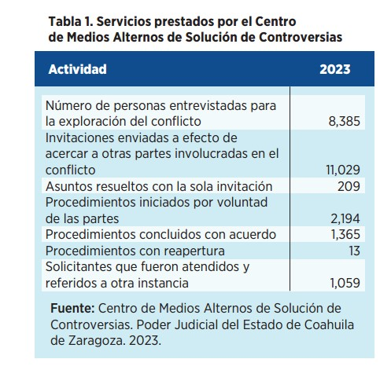


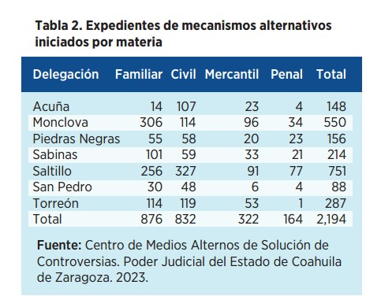
EXPEDIENTES DE MECANISMOS ALTERNATIVOS INICIADOS POR MATERIA
La justicia alternativa se distingue por ser un conjunto de métodos no judiciales para resolver disputas. En lugar de recurrir a la intervención de una persona juzgadora, fomentamos la participación de especialistas en mediación, conciliación y facilitadores. Estos profesionales, a través del diálogo, crean un entorno de cordialidad y respeto que permite a las partes involucradas abordar sus conflictos de manera eficaz, voluntaria, gratuita y confidencial.

La iniciación de expedientes en este contexto no solo representa un registro formal de los casos, sino también un indicador clave para evaluar la eficacia y la aceptación de la justicia alternativa en la sociedad. Estos expedientes nos proporcionan una ventana única hacia la resolución de conflictos basada en el diálogo y la colaboración, destacando así el compromiso del Estado con métodos más inclusivos y menos adversariales en la búsqueda de una sociedad justa y equitativa. En el periodo que se informa iniciamos dos mil 194 expedientes.
ASUNTOS DERIVADOS A MEDIACIÓN POR ÓRGANOS JURISDICCIONALES
Por otro lado, atendimos 189 expedientes derivados de Juzgados en diversas materias, 75 de estos con acuerdo, 73 por escrito y dos de ellos de manera verbal.
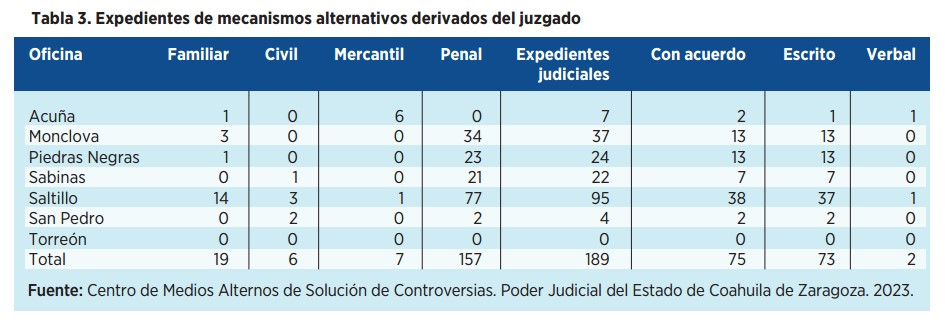
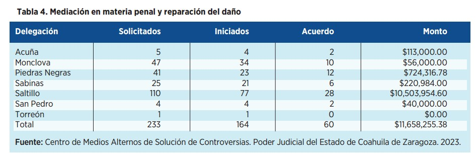
MEDIACIÓN EN MATERIA PENAL Y REPARACIÓN DEL DAÑO
En el ámbito de los mecanismos alternativos en materia penal, la mediación es una valiosa herramienta que facilita a las partes involucradas abordar las consecuencias derivadas de un daño, ofensa o delito. Su enfoque principal radica en la reparación del daño, desligándose de manera no necesariamente vinculante a la sanción del responsable. Este proceso lo materializamos a través de acuerdos reparatorios o planes de reparación, diseñados de manera específica para atender las necesidades de las víctimas.
Durante 2023, se iniciaron 233 casos relacionados con mecanismos alternativos penales en nuestro estado. Este esfuerzo resultó en la consecución de 60 acuerdos, que en términos de reparación del daño se tradujo en 11 millones 658 mil pesos otorgados a las víctimas. Un logro significativo para el Poder Judicial de Coahuila, que destaca la efectividad y la aceptación creciente de la mediación en el contexto penal.

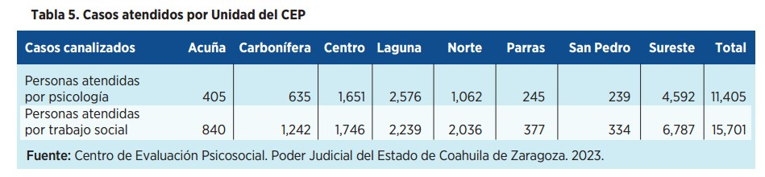
CENTRO DE EVALUACIÓN PSICOSOCIAL
Brindamos atención integral a las personas que forman parte de un proceso judicial, para aportar de forma objetiva elementos de convicción a las autoridades jurisdiccionales, con una visión cercana y de excelencia en la calidad de todos nuestros servicios.
A fin de atender oportunamente los requerimientos de los órganos jurisdiccionales, contamos con personas expertas en psicología y trabajo social, quienes realizan entrevistas, visitan domicilios, constatan la forma en la que viven las personas que están en un juicio y analizan la capacidad de padres o madres para hacerse cargo del cuidado de hijas e hijos, mediante la aplicación de pruebas psicológicas.
Todo lo anterior permite a las autoridades jurisdiccionales conocer vivencias, motivaciones y actitudes para emitir la sentencia que más favorezca a niñas, niños y adolescentes, dando plena satisfacción al derecho que tienen de acceder a la justicia en condiciones de igualdad.
Para lograr lo anterior, contamos con ocho unidades del Centro de Evaluación Psicosocial (CEP) en los distintos distritos judiciales del estado, en los que durante 2023 brindamos atención a 27 mil 106 personas, de las cuales atendimos a 15 mil 701 en el área de trabajo social y a 11 mil 405 en el área de psicología.

El resultado obtenido en este año fue la emisión de dos mil 913 dictámenes, de los cuales dos mil 81 fueron enviados a los juzgados y 832 informes de trabajo social se entregaron al área de psicología, para fundamentar los dictámenes psicosociales.
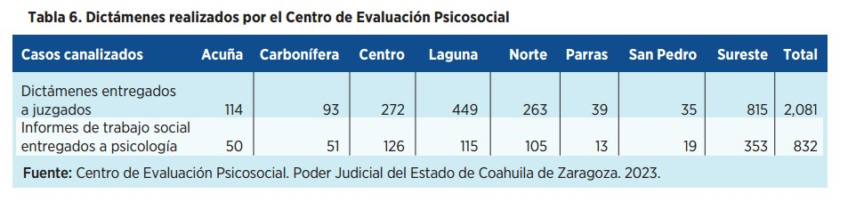
Con la finalidad de mantenernos bajo el enfoque de imparcialidad que debe prevalecer en estos asuntos, y para que las personas usuarias evaluadas mantengan la certeza de que se dará a la autoridad jurisdiccional el resultado con información objetiva, realizamos 23 mil 537 entrevistas, de las cuales 14 mil 243 fueron realizadas por parte del área de trabajo social y nueve mil 294 por personal de psicología. Asimismo, llevamos a cabo 16 mil 686 visitas domiciliarias para constatar información proporcionada por los justiciables y abonar a la integración de los dictámenes correspondientes.

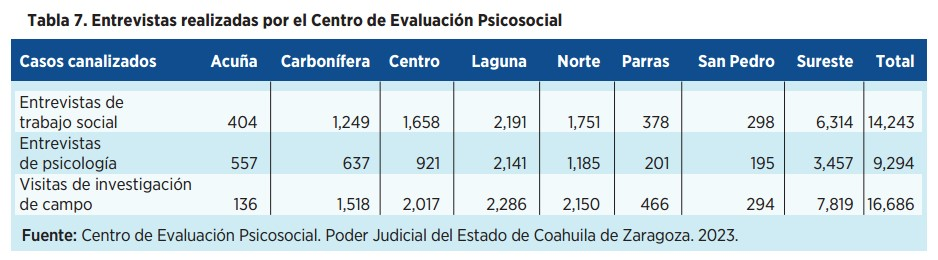


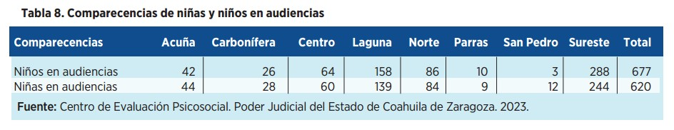
Por otra parte, las solicitudes de pruebas de capacidad incluyeron a 677 niños y 620 niñas, quienes, del total, un 58 por ciento resultaron aptos y aptas para acudir ante la autoridad jurisdiccional a rendir su testimonio. Para estos efectos, consideramos en cada asunto la etapa de desarrollo en la que se encuentran los niños, niñas y adolescentes, y evaluamos el riesgo de que sean involucrados en un conflicto de lealtades que afecte su estabilidad emocional.
A través de personal del área de psicología del CEP, acompañamos en 600 audiencias a niñas, niños y adolescentes, en apego al interés superior de la infancia, el cual debe prevalecer en forma transversal y por encima de cualquier otra consideración.

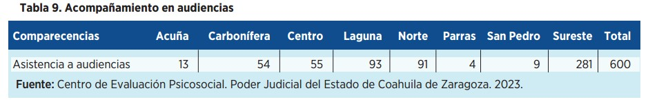
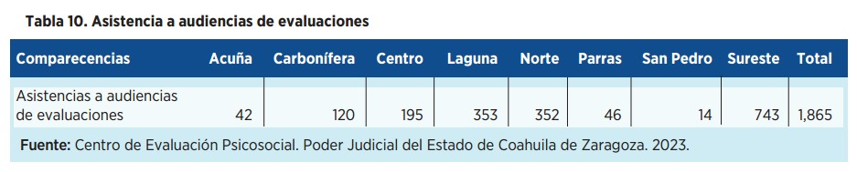
En 2023, asistimos a mil 865 audiencias para desahogar los dictámenes realizados con las formalidades establecidas en la legislación procedimental de cada materia, preservando el interés superior de la infancia. Cabe destacar que, en dichas audiencias, las partes tienen el derecho de controvertir e interrogar al perito encargado de emitir el dictamen, quien debe contar con la fundamentación profesional y metodológica para sustentar su intervención.


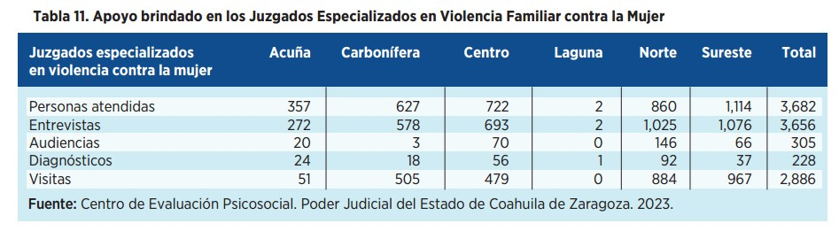
Por otra parte, en apoyo a los Juzgados Especializados en Violencia Familiar contra la Mujer, elaboramos diagnósticos de interacción familiar a fin de brindar herramientas de apoyo para que las personas juzgadoras determinen las medidas necesarias a las víctimas de violencia con la aplicación de los estándares más altos de protección.
En ese sentido, durante 2023 brindamos atención a tres mil 682 personas, efectuamos tres mil 656 entrevistas, emitimos 228 diagnósticos, realizamos dos mil 886 visitas domiciliarias y acudimos a 305 audiencias.
A través de estas acciones garantizamos el acceso efectivo a la justicia en condiciones de igualdad, y brindamos a las personas juzgadoras múltiples pautas que deben atenderse al momento de dictar resoluciones que involucren niñas, niños y adolescentes.

REGISTRO ESTATAL DE DEUDORES ALIMENTARIOS MOROSOS (REDAM)
Hemos constatado que el Registro Estatal de Deudores Alimentarios Morosos (REDAM) es un instrumento eficaz en la administración de la justicia familiar y la protección de los derechos de las infancias.
En la presente anualidad realizamos el registro de 40 personas en este padrón, de las cuales 37 son hombres y tres mujeres. Estos registros son el resultado de un riguroso proceso de verificación y seguimiento, con el objetivo de identificar aquellas personas que han dejado de cumplir con sus obligaciones alimentarias, asegurando así la protección de los derechos fundamentales de las infancias afectadas.
Como parte de los esfuerzos que realizamos para facilitar los trámites para las personas que requieren constancias de no registro en el REDAM, implementamos un sistema informático que nos permitió expedir 141 constancias de no registro de manera ágil y directa, simplificando el proceso y garantizando el acceso oportuno a la información con la máxima responsabilidad y respeto por los derechos de todas las partes involucradas.
La identificación y registro de deudores alimentarios morosos fortalece la capacidad de este Poder Judicial para intervenir de manera efectiva en situaciones de incumplimiento, garantizando así el bienestar y la seguridad económica de las niñas, niños y adolescentes afectados.
PROGRAMA PAGO DE PENSIÓN ALIMENTICIA POR MEDIO DE CUENTA BANCARIA
Durante 2023, implementamos el Programa Pago de Pensión Alimenticia por Medio de Cuenta Bancaria, política pública sin precedente con ventajas de la banca privada a beneficiarios de un servicio público, con lo que hicimos más accesible el derecho de alimento para menores.
A través de esta estrategia buscamos que las personas registradas en el programa reciban puntualmente lo que les corresponde de acuerdo a la Ley de Pensión Alimenticia, sin tener que acudir de manera reiterada a los juzgados, a través de una tarjeta de débito bancaria gratuita que podrán utilizar en más de 16 mil 800 sitios en todo el país.
Esta tarjeta también les brinda beneficios a las personas usuarias como asistencia funeraria sin costo, asistencia telefónica médica, dental, psicológica y legal, seguro de vida por 100 mil pesos y banca digital sin costo, entre otros.


Con esta acción además evitamos que mujeres que han sido víctimas de violencia se vean obligadas a estar en contacto con su agresor al recibir la pensión alimenticia, y les ahorramos gastos de traslado a los juzgados.
JUSTICIA ITINERANTE
Con el objetivo de facilitar a la ciudadanía el acceso a la justicia y agilizar sus trámites, así como acercar y difundir los servicios jurídicos gratuitos de asesoría, orientación y representación, durante 2023 continuamos con el programa Justicia Itinerante en conjunto con la Facultad de Jurisprudencia de la Universidad Autónoma de Coahuila, la Dirección del Registro Civil y la Presidencia Municipal de Saltillo. Este año llevamos a cabo 36 brigadas móviles, en las que brindamos 343 asesorías jurídicas a personas en situación de vulnerabilidad, y entregamos 976 volantes con información relativa a los servicios gratuitos que ofrecemos, ampliando con ello la cobertura de defensoría pública y asesoría jurídica.
INSTITUTO ESTATAL DE DEFENSORÍA PÚBLICA
Mediante el Instituto Estatal de Defensoría Pública (IEDP) contribuimos con la máxima encomienda y objetivo primordial de ser garante de las libertades, derechos, participación y protección de la dignidad de todas las personas, facilitando el acceso a la justicia sin importar su condición económica, social o cultural.
Garantizar el derecho a una defensa adecuada es una condición necesaria para acercar la justicia a todas las personas, en especial a aquéllas que históricamente han sido olvidadas por los sistemas de justicia.
Una de las prioridades ha sido consolidar el IEDP como un instrumento eficaz de justicia. Es por eso que hemos coordinado esfuerzos entre las diferentes unidades que lo integran, para dotar de capacidad institucional, eficientar recursos y brindar un servicio de calidad a todas las personas que así lo requieran.
Este año atendimos 193 mil 479 personas en las diferentes áreas y delegaciones del IEDP en el estado. En la Unidad de Asistencia Administrativa y Asesoría Jurídica proporcionamos servicios a 66 mil 718 personas; en la Unidad de Defensa Civil, Familiar y Mercantil recibimos 65 mil 727 personas; en la Unidad de Defensa Penal brindamos atención a 28 mil 312 personas; en la Coordinación de Calidad, cinco mil 975 personas recibieron nuestro servicio; y en la Coordinación de Comunicación Social atendimos a 26 mil 747 personas.
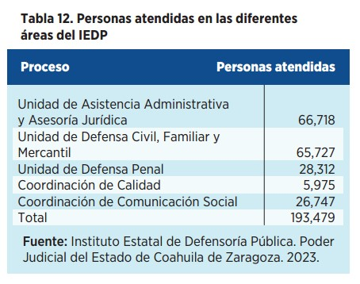
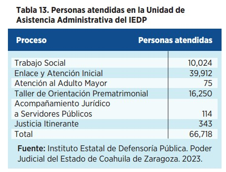
UNIDAD DE ASISTENCIA ADMINISTRATIVA Y ASESORÍA JURÍDICA
La tutela jurídica efectiva implica el respeto a los derechos humanos de todas las personas, y en el Poder Judicial mediante el Instituto Estatal de Defensoría Pública cumplimos con los principios de igualdad, no discriminación, equidad y transparencia en la atención que facilitamos, especialmente a quienes no pueden solventar los servicios legales para la defensa de sus derechos.

Esta labor nos compromete a vincular nuestros esfuerzos de manera interinstitucional y de forma multisectorial, lo que nos ha permitido transitar hacia buenas prácticas como las mesas de asesoría, orientación gratuita y servicios jurídicos a la comunidad, a través de brigadas.
Lo anterior nos exige presentar los resultados que reflejan el cumplimiento de nuestro propósito fundamental: garantizar el acceso a la justicia de nuestros ciudadanos. En el año que se informa, en la Unidad de Asistencia Administrativa y Asesoría Jurídica del IEDP beneficiamos a 66 mil 718 personas con servicios de trabajo social, enlace y atención inicial, Justicia Itinerante y el Taller de Orientación Prematrimonial.
En el proceso que corresponde a Trabajo Social, brindamos atención a 10 mil 24 personas, realizamos mil 872 estudios e investigaciones socioeconómicas, enviamos mil 442 invitaciones, brindamos seis mil 402 orientaciones jurídicas y solicitamos cuatro mil 311 veces documentación para su revisión. Un punto a destacar es que logramos acordar 227 asuntos a través del procedimiento de conciliación, con la finalidad de promover las mejores vías para acercar a las y los ciudadanos a la solución pacífica y satisfactoria de sus conflictos.
Mientras que, en el área de Enlace y Atención Inicial, este año brindamos 15 mil 905 orientaciones jurídicas, 17 mil 13 asesorías y nueve mil 227 revisiones y solicitudes de papelería, efectuamos mil 998 escritos y promociones, e interpusimos 237 convenios judiciales. Con dichas acciones y actividades beneficiamos a un total de 39 mil 912 personas.
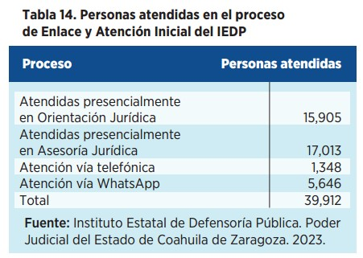

Conscientes de la importancia de proteger y garantizar los derechos de las personas más vulnerables de nuestra sociedad, en el ejercicio que informamos atendimos a 75 adultos mayores y, en seguimiento de estas mismas solicitudes, efectuamos 160 visitas domiciliarias, logrando dirimir la problemática de las y los adultos mayores que requirieron nuestros servicios.
Por lo que atañe al proceso de Taller de Orientación Prematrimonial (TOP) en 2023, impartimos 121 talleres donde orientamos a ocho mil 125 parejas, de estas agendamos un total de siete mil 437 que debían cumplir con el requisito de asistencia al taller para estar en posibilidad de contraer matrimonio. De las parejas que participaron en el TOP, siete mil 141 recibieron constancia de acreditación del mismo.
Aunado a lo anterior, coadyuvamos en la celebración de 42 bodas comunitarias y orientamos y beneficiamos a 760 parejas con la condonación del pago del TOP.
Finalmente, con el objetivo de brindar atención y representación jurídica en audiencias a las y los servidores públicos a quienes se les inicia un procedimiento administrativo, en este periodo dimos acompañamiento jurídico a 114 servidores públicos, desahogamos 120 audiencias y ofrecimos 156 asesorías jurídicas.
UNIDAD DE DEFENSA CIVIL, FAMILIAR Y MERCANTIL
A partir de la implementación del Nuevo Modelo de Justicia asumimos con integridad el compromiso de garantizar a todas las personas, que por su estado de vulnerabilidad lo requieran, servicios gratuitos de representación y asesoría jurídica con los más altos estándares de profesionalismo y calidad.
Durante el periodo que informamos, atendimos un total de 65 mil 727 personas, de los cuales 42 mil 651 son mujeres y 23 mil 76 son hombres; facilitamos 19 mil 29 asesorías; gestionamos 60 mil 194 asuntos, entre promociones, asesorías y audiencias; e iniciamos siete mil 571 asuntos.
Mientras que en trámite tenemos cuatro mil 529 asuntos y concluimos siete mil 23, mismos que terminaron con sentencia.
De estos, mil 778 culminaron con resolución favorable, lo que representa el 36 por ciento de efectividad en la representación jurídica de nuestros defensores y defensoras; mientras que por convenio judicial finalizamos 751 asuntos.
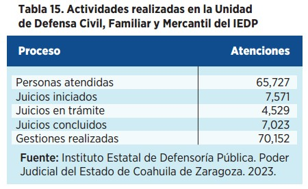
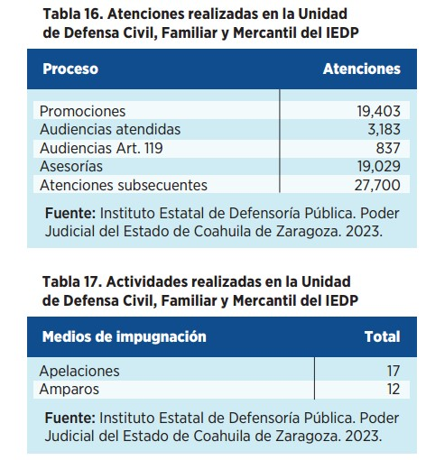
UNIDAD DE DEFENSA PENAL
A través de la Unidad de Defensa Penal garantizamos el respeto a los derechos y libertades de toda persona acusada, promovemos la justicia evitando la criminalización injusta, acatamos el derecho a un recurso judicial, a la ejecución de la determinación judicial y velamos porque las sentencias sean claras y comprensibles para el justiciable.
Trabajamos para garantizar el debido proceso de quienes tienen el carácter de persona imputada o sentenciada, así como los trámites procesales y la ejecución de la pena impuesta. Asimismo, en todo momento velamos para que se respeten los derechos de las personas que enfrentan este proceso.
En el año que informamos, tramitamos 40 juicios; asistimos a 20 mil 334 audiencias; brindamos 17 mil 970 asesorías; realizamos 44 mil 338 gestiones, asesorías, promociones y audiencias; beneficiamos a 541 personas detenidas de manera ilegal; y resolvimos 469 asuntos por acuerdo reparatorio.
En coordinación con las autoridades administrativas de los Centros de Justicia Penal y de la Fiscalía General del Estado de Coahuila implementamos un nuevo sistema de acceso rápido a las audiencias, en virtud del cual las partes se encuentren en posición para darle una salida alterna a los procesos en los que se ven inmersos, buscando de esta manera agilizar los procedimientos judiciales en toda la entidad.


Además, en el Área Penal Tradicional atendimos a 211 personas; en materia de Sistema Penal Acusatorio y Oral dimos atención a 28 mil 101 personas; y realizamos 44 mil 338 gestiones en toda la entidad.
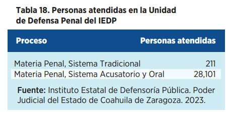
Por último, durante 2023 iniciamos 11 mil 194 asuntos, concluimos 10 mil 710 y mantenemos el 84 por ciento de asuntos judicializados desde el año 2020.
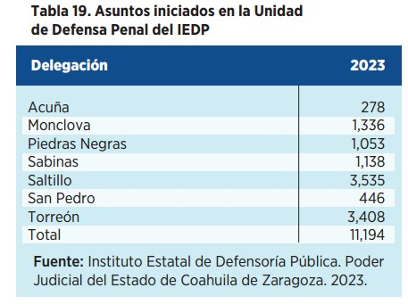
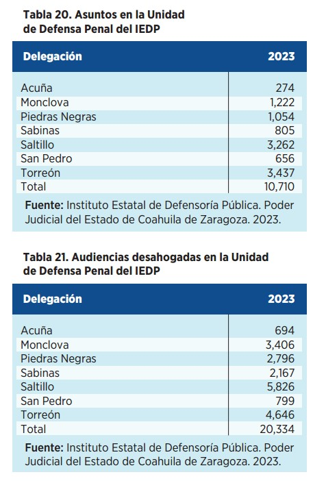
JUZGADOS ESPECIALIZADOS EN VIOLENCIA FAMILIAR CONTRA LA MUJER
Los Juzgados Especializados en Violencia Familiar contra la Mujer resultan de una política pública en materia de género que comenzó su funcionamiento el 18 de enero de 2021. Ahora, a casi tres años de su implementación, seguimos trabajando de forma constante y permanente en la prevención, aplicación de la legislación correspondiente y la sanción de la violencia contra la mujer en la actividad jurisdiccional y administrativa, adoptando medidas normativas, judiciales e institucionales que permitan la atención focalizada, oportuna y eficiente de asuntos de violencia contra la mujer, sus hijas e hijos, dentro de ese ámbito.
En la consolidación de este modelo de competencia mixta, colaboramos con el programa de ConJusticia de la Agencia de los Estados Unidos para el Desarrollo Internacional (USAID), para plasmar el Manual de Procesos de los Juzgados Especializados en Violencia Familiar contra la Mujer, donde se pueden observar los cambios que ha significado este modelo en Coahuila y también compartir esta experiencia con otras entidades, para que las mujeres mexicanas puedan recibir una justicia pronta, expedita y con perspectiva de género.
El objetivo de dicho manual es que las juzgadoras y los juzgadores tengan una herramienta en donde, de manera sencilla y completa, se determine la forma de aplicación de la normativa familiar y penal, como mecanismo para maximizar la protección de las mujeres víctimas de violencia, sus hijas e hijos, y así evitar su revictimización.
Cabe resaltar que este modelo, resultado de la coordinación y colaboración entre poderes públicos, ha demostrado ser un mecanismo de prevención y atención. Durante este 2023 disminuyó el índice de feminicidio, al registrar 12 casos, el número más bajo en los últimos seis años. Además de que ninguna de las personas que ha cometido el delito se ha extraído de la acción de la justicia.
Prueba de esto es que los casos derivados de decesos por casos de violencia contra las mujeres ya se encuentran judicializados, con sentencias condenatorias o en vías de concluir, para que los responsables reciban penas de cárcel en estricto apego a la ley. Ante los resultados positivos que estos juzgados han representado a las familias coahuilenses, durante el año recibimos la visita de operadores del sistema de justicia penal de los estados de Baja California, Chiapas, Querétaro, Quintana Roo y San Luis Potosí, quiénes conocieron nuestro modelo de forma integral, su gestión y aplicación para replicarlo en sus sistemas de administración de justicia.
Como producto de estas visitas, en agosto pasado el Poder Judicial del Estado de Quintana Roo comenzó con la implementación de los juzgados especializados, y el del Estado de Baja California está en vías de aplicarlo.


REGISTRO ESTATAL DE PERSONAS SANCIONADAS POR VIOLENCIA CONTRA LAS MUJERES
A un año de su creación, el Registro Estatal de Personas Sancionadas por Violencia contra las Mujeres (REPVM) se ha convertido en un referente en materia de derechos de este grupo poblacional. Esta herramienta es de consulta pública y busca dar difusión a lo resuelto en sentencias, contribuir a la reparación del daño sufrido por la víctima y proveer a la ciudadanía en general de datos abiertos, como un mecanismo de prevención y protección para atender el factor de riesgo de reincidencia y repetición de conductas de violencia contra las mujeres, a favor de las víctimas o potenciales víctimas.
El REPVM es un sistema de información de carácter administrativo y público, que se encuentra disponible en el portal del Poder Judicial y contiene, entre otros datos, el nombre de la persona sancionada, el delito genérico y específico, el tipo de sentencia y la pena impuesta. A la fecha se cuenta con un registro de 991 personas.
Este registro dota de publicidad a las agresiones realizadas por cualquier persona que sea condenada y sancionada en un procedimiento penal por una sentencia ejecutoriada por ejercer violencia contra las mujeres, en aquellos casos en donde se vulnere el desarrollo de la personalidad, la integridad, las libertades y seguridades, y el desarrollo de la personalidad, la vida y la familia libre de violencia, así como la subsistencia familiar.

La consulta del REPVM se ha convertido en una parte fundamental de los esfuerzos por visibilizar la violencia contra las mujeres en razón de género en nuestro estado.
ESPACIOS DIGNOS Y ADECUADOS
Una infraestructura adecuada y con avances tecnológicos son clave en la impartición de justicia y funcionamiento efectivo del sistema.
Por lo que, en aras de robustecer la impartición y administración de justicia, y con ello hacer más accesible la prestación de nuestros servicios, realizamos el mantenimiento necesario en las instalaciones para contar con lugares dignos para el personal, basado en sus necesidades, y ofrecer mejores servicios para las personas usuarias.
Continuamos con nuestro compromiso de seguir trabajando para contar con instalaciones y equipamiento óptimo, que eficiente los servicios en pro de una justicia más pronta y expedita.
ADECUACIÓN A LA INFRAESTRUCTURA EN LOS DISTRITOS JUDICIALES
En el Distrito Judicial de Acuña desplegamos una serie de iniciativas enfocadas en la mejora y el mantenimiento de las instalaciones judiciales en la ciudad.
En el Tribunal Laboral de ese distrito judicial acondicionamos las salas de audiencias con mobiliario nuevo. De igual forma, realizamos trabajos de impermeabilización en pasos de losa por ductería en el Centro de Justicia Civil y Familiar en Acuña, así como el resane con pasta y aplicación de pintura en áreas afectadas o deterioradas de dicho centro. Finalmente, en el edificio del Juzgado Penal de Acuña, impermeabilizamos, sustituimos lámparas y reemplazamos plafones y pintura.
En el Distrito Judicial de Monclova focalizamos el trabajo en el levantamiento físico de un edificio de mil 200 m2 con dos plantas, correspondiente al antiguo Centro Penitenciario Federal en esa ciudad. Esta iniciativa la materializamos mediante un detallado proceso de medidas físicas, con el objetivo de obtener un registro preciso de las dimensiones y características del inmueble; y posteriormente implementamos un servicio integral de digitalización de los planos generados, asegurando así una representación precisa y accesible del edificio en formato digital.
Estos trabajos son con la finalidad de proyectar la posible reubicación del Centro de Justicia Penal localizado en Frontera, para prestar un servicio más eficiente de manera contigua al Centro Penitenciario Local.


Mientras que en Frontera, durante el transcurso de 2023, centramos nuestra labor en optimizar las instalaciones del Tribunal Laboral. Construimos un cuarto de equipo de bombas mediante muros de block y losa aligerada, con la que fortalecimos la infraestructura y la capacidad operativa del tribunal, asegurando un suministro eficiente de agua y contribuyendo a la sostenibilidad de las instalaciones. En cuanto al acondicionamiento de espacios, realizamos la reparación de losa y puertas, reemplazamos plafones y ventanas, y además adecuamos las salas de audiencia mediante la construcción de muros divisorios con tablaroca, resane y pintura.
En el Distrito Judicial de la Región Carbonífera nos enfocamos en realizar trabajos específicos para optimizar la funcionalidad y estética de los espacios.
Llevamos a cabo el suministro e instalación de vinil plástico con acabado de madera, modelo Stormlake, para el forro de la barra en el área de Oficialía de Partes en el edificio del Centro de Justicia de la Región Carbonífera.

En relación con la seguridad y accesibilidad, realizamos un servicio de desmonte de puertas dobles que estaban desniveladas, afectadas por vientos fuertes; y sustituimos un cierrapuertas aéreo, dos pasadores tipo maroma y dos guardapolvos. Además, realizamos la aplicación de pintura general en los muros interiores del Centro de Justicia, proporcionando un ambiente renovado y limpio, así como el cambio de plafones dañados.
En el Centro de Justicia Penal con sede en Sabinas llevamos a cabo la sustitución de una bomba sumergible en la cisterna, asegurando un suministro eficiente de agua y un funcionamiento óptimo del sistema hidráulico. También hicimos el cambio de lámparas, el reemplazo de plafones dañados y de herrajes en sanitarios y llaves mezcladoras.
Finalmente, en la bodega destinada para almacenar archivos y expedientes en el Centro Penitenciario, realizamos un servicio integral que incluyó el reemplazo de la cerradura, mejorando la seguridad y accesibilidad del espacio.
En el Distrito Judicial de Río Grande los trabajos que realizamos se centraron en la mejora y mantenimiento de las instalaciones judiciales. Llevamos a cabo una revisión exhaustiva, monitoreo y limpieza de las celdas fotovoltaicas (paneles solares) en el Centro de Justicia Civil y Familiar, asegurando así un óptimo rendimiento y eficiencia en la generación de energía solar.
En el Tribunal Laboral con sede en Piedras Negras ejecutamos un proyecto integral de adecuación y acondicionamiento de la sala de audiencias, que incluyó la instalación de mobiliario, la construcción de muros divisorios con tablaroca, resane y pintura, y la instalación de dos puertas.
En el Centro de Justicia Civil y Familiar llevamos a cabo un servicio esencial de limpieza de aislamiento con solvente dieléctrico y aislamiento dentro de la subestación compacta; y además realizamos sustituciones de ocho aisladores soporte de 35 KV, ajustes de barras de cobre y el restablecimiento de energía y toma de voltaje, asegurando el funcionamiento seguro de las instalaciones eléctricas. También abordamos aspectos críticos como el desazolve de fosa séptica y línea de drenaje, utilizando equipos especializados y maquinaria para garantizar la correcta operación de las instalaciones en el Centro de Justicia Penal, Defensoría Pública y el Centro Penitenciario.
En el Distrito Judicial de Saltillo llevamos a cabo una serie de acciones significativas durante el año 2023, entre las que destacan el servicio de limpieza del terreno en donde se construye actualmente la Ciudad Judicial, mediante retroexcavadora y dos camiones de volteo.
Además, gestionamos el alquiler de equipo para la demolición de tope de concreto en un predio cercano, y coordinamos servicios esenciales como la pipa de agua para riego y asentamiento de tierra en el bulevar Fundadores, así como la fabricación de piedra con cantera negra América.
En el ámbito del mantenimiento, llevamos a cabo acciones como la reparación de lámparas y el armado de estanterías en el Archivo Judicial General, así como el mantenimiento preventivo a las bombas de agua y la limpieza de áreas verdes en el Centro de Justicia Penal. Igualmente, ejecutamos una variedad de trabajos en el Juzgado Quinto de Primera Instancia en Materia Civil con Especialización Hipotecaria, la Secretaría Técnica y de Transparencia y el Instituto de Especialización Judicial.
En cuanto al Tribunal Laboral de Saltillo, acondicionamos y amueblamos las salas de audiencias, construimos muros de tablaroca y realizamos los ajustes eléctricos necesarios, asegurando así un entorno funcional y adecuado para las actividades judiciales.
En el Distrito Judicial de Torreón implementamos acciones para mejorar las instalaciones, dándole mantenimiento preventivo al equipo de bombas de agua en el Centro de Justicia de aquel distrito judicial.


Asimismo, en el Tribunal Laboral de Torreón realizamos la construcción de muros de tablaroca, resane y pintura en la sala de audiencias; y acondicionamos el edificio con nuevo mobiliario, incluyendo escritorios, archiveros, módulos de trabajo, credenzas y sillas, optimizando el entorno laboral para el personal del tribunal.